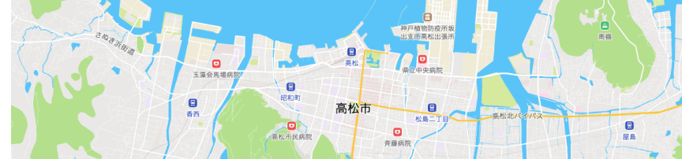

「スマートシティたかまつ」の実現を、
オープンソースコミュニティと一緒に進めてまいります
スマートシティの構築には、オープンデータの積極的な利活用が重要です。高松市では、地域課題の解決に向けた取組を促進するため、保有するデータを、地図・Web API等により提供しています。
オープンデータとは
オープンデータとは、自治体などが保有する公共データを、市民や企業などに利活用されやすいように機械判読に適した、二次利用可能な形で公開すること、また、そのように公開されたデータのことです。
オープンデータを利用するには
オープンデータを利用すると、都市の情報を調べたり、APIを使ってアプリやサービスを開発したりすることができます。高松市で公開している、地図API・Web APIについては各ドキュメンテーションで利用方法をご覧ください。
高松市オープンデータを使った
デジタルマップはこちら

高松市オープンデータの
データカタログはこちら
高松市のオープンデータ、ウェブアプリケーションの
ソースコードを公開・管理しています
新着情報
- 2024/1/29
- メンテナンス作業のため、2月29日(木)は終日API利用（データ登録・参照・更新等）ができません。尚、上記作業により、スマートマップ・マイセーフティマップ上のデータ（水位・潮位情報等）が欠損します。また、オープンデータ一覧（CKAN）も同期間、利用できなくなります。ご不便をおかけしますがご理解の程お願い申し上げます。
- 2023/10/18
- メンテナンス作業のため、10月26日13時～17時の間、センサーデータやCKAN等、一部アクセスできなくなります。ご理解の程お願い申しあげます。
- 2023/08/18
- メンテナンス作業のため、8月22日16時～17時の間、15分程度サイトにアクセスできない時間があります。ご理解の程、お願い申しあげます。
- 2023/04/01
- ウェブサイトをアップデートしました。
データ更新情報
お問い合わせ
本サイトやデータセットに関するお問い合わせ、リクエストなどございましたら、
下記のアドレスまでお願いいたします。
なお、本市のオープンデータを利活用した事例がございましたら、共有頂けますと幸いです。
digital_sct（アットマーク）city.takamatsu.lg.jp
※（アットマーク）箇所を@と読み替えてください。
※宛先に誤りがないようご注意ください。